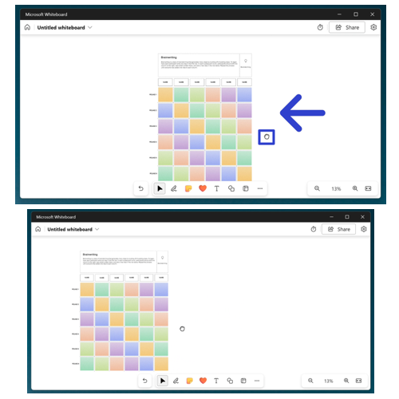

How to Edit the Microsoft Whiteboard App Display (Windows 11)
This tutorial covers:
How to Pan Across the Canvas:
How to Change the Whiteboard Color
How to Change the Whiteboard Background
How to Enhance Inked Shapes
No time to scroll down? Click through this tutorial presentation:
Follow along with a video tutorial:
How to Pan Across the Canvas With Mouse
- Step 1: First open a whiteboard template. Click, hold, and drag the mouse in any direction to pan across the canvas. Release the mouse to stop panning across the canvas. 
How to Pan Across the Canvas With Keyboard
- Step 1: Open a whiteboard template. On the keyboard press the arrow keys to pan across the canvas.

How to Change the Whiteboard Color
- Step 1: First open a blank whiteboard. In the upper right click the “Settings menu” or gear button.

- Step 2: In the menu that opens, click “Format background”.

- Step 3: In the menu that opens, click to select a color.

How to Change the Whiteboard Background"
- Step 1: Open a blank whiteboard. In the upper right click the “Settings menu” or gear button.
- Step 2: In the menu that opens, click “Format background”.
- Step 3: In the menu that opens, click to select a background.
How to Enhance Inked Shapes
- Step 1: First open a blank whiteboard. In the upper right click the “Settings menu” or gear button.
- Step 2: In the menu that opens, click to toggle the “Enhance inked shapes” option on.

- Step 3: Go down to the bottom toolbar and click the “Inking” button.
- Step 4: Draw any shape. Microsoft Whiteboard automatically converts the Ink object into a shape.
Save a copy of these instructions for later with this free tutorial PDF.